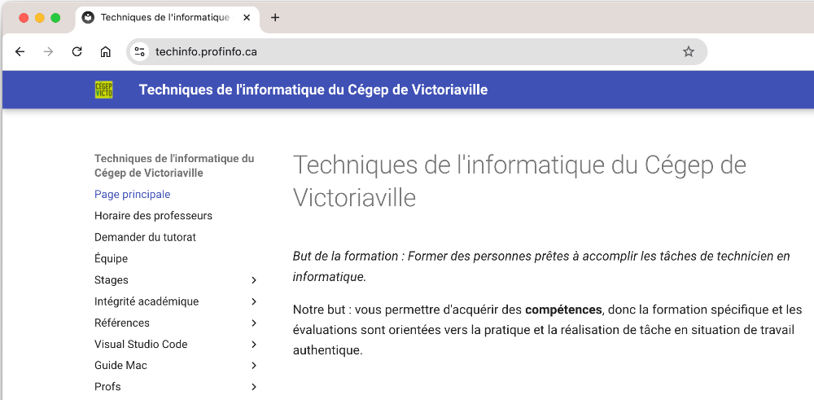
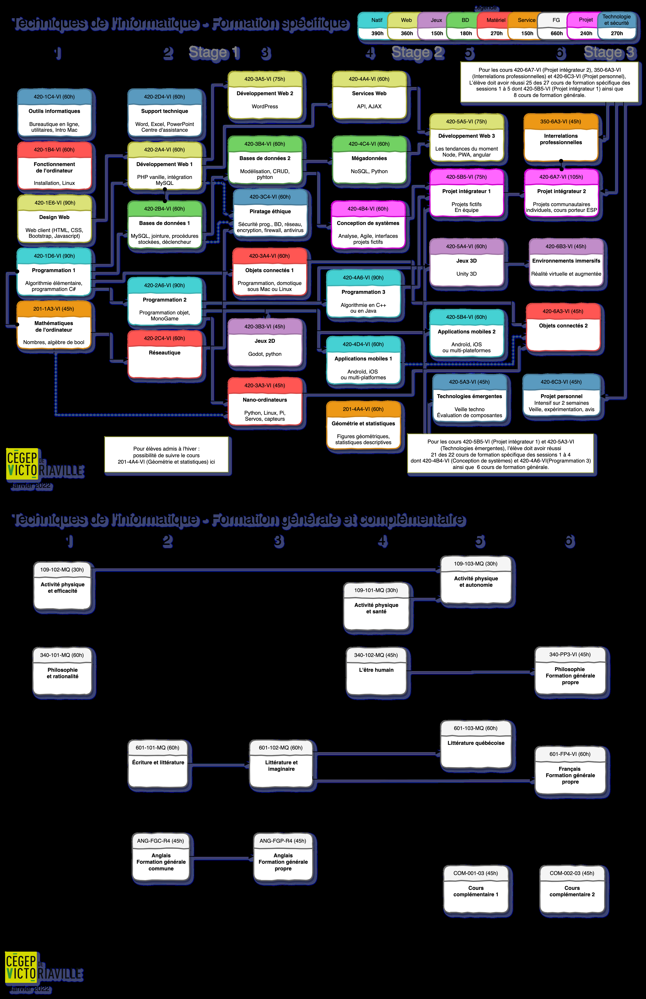

Introduction et vue d'ensemble du cours¶
1. Où trouver de l'aide¶
1.1 Horaire et coordonnées de Sébastien Trottier - session d'automne¶
Sébastien Trottier, Automne 2026¶
Bureau : C-207 au pavillon central Courriel : trottier.sebastien@cegepvicto.ca
Horaire des enseignants en informatique Je suis très souvent à mon bureau entre mes cours, vous pouvez simplement passer me voir ou encore me contacter via Teams, ça me fera plaisir de vous aider!
1.2 Plan de cours¶
Déposé sur Omnivox
Médiagraphie¶
Android Jetpack, https://developer.android.com/jetpack (Page consultée le 7 juillet 2021) React Native, https://reactnative.dev/ (Page consultée le 29 avril 2024)
Matériel requis¶
- Ordinateur portable
- Au moins un appareil mobile Android fourni par le département, partagé par les élèves.
1.3 Site Web du département¶
Une foule de renseignements ont été consignés à votre intention sur le site https://techinfo.profinfo.ca .

8.1 Grille de cours du programme Techniques de l'informatique¶
